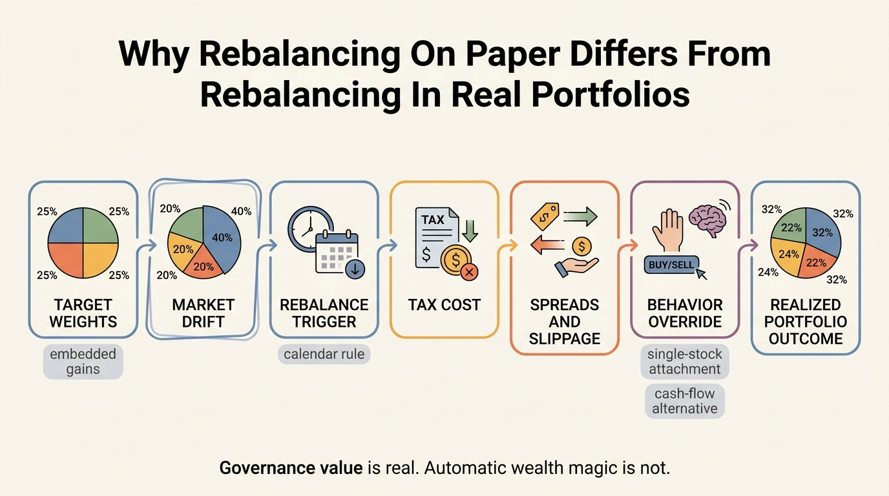
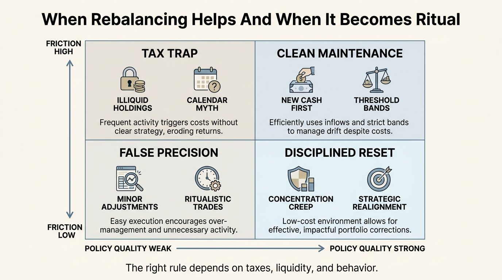

The Rebalancing Illusion
Rebalancing is one of the most repeated instructions in portfolio management. Sell what has run, add to what has lagged, return to target weights, and let discipline do the work. The principle is sound. The illusion begins when investors treat it as automatic wealth creation. Rebalancing can improve risk control and sometimes improve realized outcomes. It does not rescue a weak asset mix, erase taxes, or compensate for a policy that nobody can actually follow in stress.
The attraction is obvious. Rebalancing feels like a machine for buying low and selling high without prediction. In clean models, that is close to the truth. In real portfolios, the result depends on account type, tax basis, trading costs, concentration, liquidity needs, and behavior. Many households think they have a rebalancing policy when they really have a vague intention that survives only during calm markets.
Core thesis: rebalancing is a governance tool, not a free-return button. Its main value is keeping risk, concentration, and asset drift inside a defined policy. The illusion appears when investors ignore taxes, spreads, illiquidity, or behavioral noncompliance and then attribute magical powers to the word itself.

What Rebalancing Actually Does Well
At its best, rebalancing enforces position-size discipline. It stops a rising asset from silently becoming the portfolio. It also prevents a risk profile chosen at one point in time from mutating into a different one after a long market move. Those are serious benefits. They are about governance first and return second.
That matters because unmanaged drift is usually a hidden bet. A household that begins with a sixty-forty mix and lets equities swell to eighty-twenty is no longer expressing its original policy. It is expressing a new view, often by accident. Rebalancing prevents accidental view changes and keeps the balance sheet tied to a chosen risk budget.
Where The Illusion Starts
The illusion is not that rebalancing never works. The illusion is that it works regardless of context. In taxable accounts, selling winners can accelerate tax recognition. In concentrated positions, the emotional difficulty of trimming often defeats the policy exactly when the policy is most necessary. In illiquid assets, target weights may be arithmetically visible but operationally unreachable. In all three cases, the textbook answer remains elegant while the live portfolio becomes messy.
This is why rebalancing cannot be separated from account structure. A quarterly rebalance inside a retirement account is a different object from a quarterly rebalance inside a large taxable account with embedded gains. The first may be nearly frictionless. The second may impose enough tax drag that band-based or cash-flow-based rebalancing becomes more rational.
Why Good Policy Matters More Than Calendar Rhythm
Many investors learn rebalancing as a date on the calendar. That is too crude. The better question is what problem the rebalance is solving. If the goal is keeping exposures inside tolerance, threshold bands often matter more than arbitrary timing. If the goal is redeploying new contributions, fresh cash can do part of the work without forcing sales. If the goal is reducing single-stock risk, a staged trimming policy may matter more than restoring an exact target weight on one day.
This is also where the article links naturally to The Concentration vs Diversification Tradeoff. Rebalancing does not create diversification by itself. It only preserves or restores the diversification policy you already chose. If the base policy is weak, perfect rebalancing simply preserves weak architecture with greater precision.

Known, Inferred, And Unknown
| Category | Assessment |
|---|---|
| Known | Rebalancing is a real mechanism for controlling asset drift and maintaining a chosen risk profile. |
| Known | Implementation frictions such as taxes, trading costs, and illiquidity can materially change the net value of any rebalance rule. |
| Known | Investor behavior is a major determinant of realized outcomes because many households fail to rebalance or override policy under stress. |
| Inferred | For most taxable households, the best rebalancing system is usually threshold-based, cash-flow-aware, and explicitly tax-sensitive rather than mechanically frequent. |
| Unknown | Which standardized rebalance designs will prove most durable across account types once taxes, automation, and behavior are modeled together rather than separately. |
What A Serious Household Should Ask
- Risk control: what exposure drift am I actually unwilling to tolerate?
- Tax context: can I use new cash, dividends, or tax-advantaged accounts first?
- Concentration: which positions could grow into identity holdings that I later refuse to trim?
- Liquidity: are any target weights not truly tradable because the assets are illiquid or gated?
- Behavior: have I defined a rule I will still follow after a fifty percent run-up or a fast drawdown?
If those questions are vague, the household does not yet have a rebalancing policy. It has a slogan.
The Better Mental Model
The practical view is simple. Rebalancing is not primarily a return enhancer. It is a discipline enhancer. Sometimes disciplined portfolios earn better long-run results because they avoid concentration blowups, reduce panic-driven drift, and preserve optionality. That is different from saying rebalancing manufactures alpha in all conditions. It does not.
Investors should therefore judge rebalancing the same way they judge insurance or liquidity buffers: by asking what failure it prevents. If the answer is accidental concentration, policy drift, and unbounded risk creep, then rebalancing is doing important work. If the answer is vague hopes of automatic outperformance, the investor is treating governance like magic.
Primary Sources
Harvey CR, Mazzoleni MG, Melone A. The unintended consequences of rebalancing. NBER Working Paper 33554. 2025, revised 2026.
Calvet LE, Campbell JY, Sodini P. Fight or flight? Portfolio rebalancing by individual investors. NBER Working Paper 14177. 2008.
Bonaparte Y, Cooper R, Zhu G. Consumption smoothing and portfolio rebalancing: The effects of adjustment costs. NBER Working Paper 16957. 2011.
Fang C, Goldstein I. Target allocation funds, strategic complementarities, and market fragility. NBER Working Paper 34509. 2025.